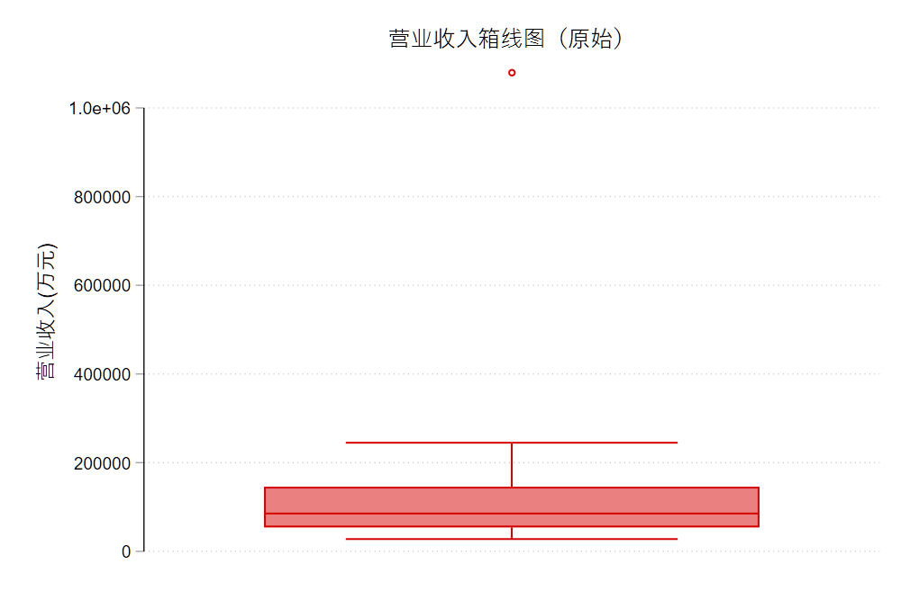
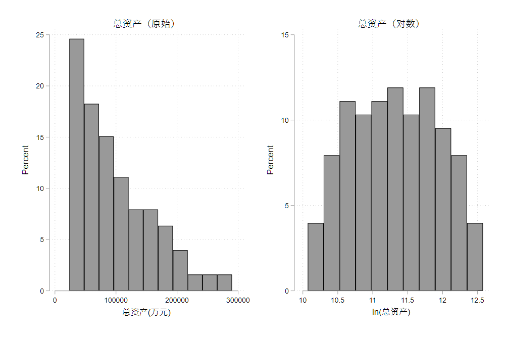
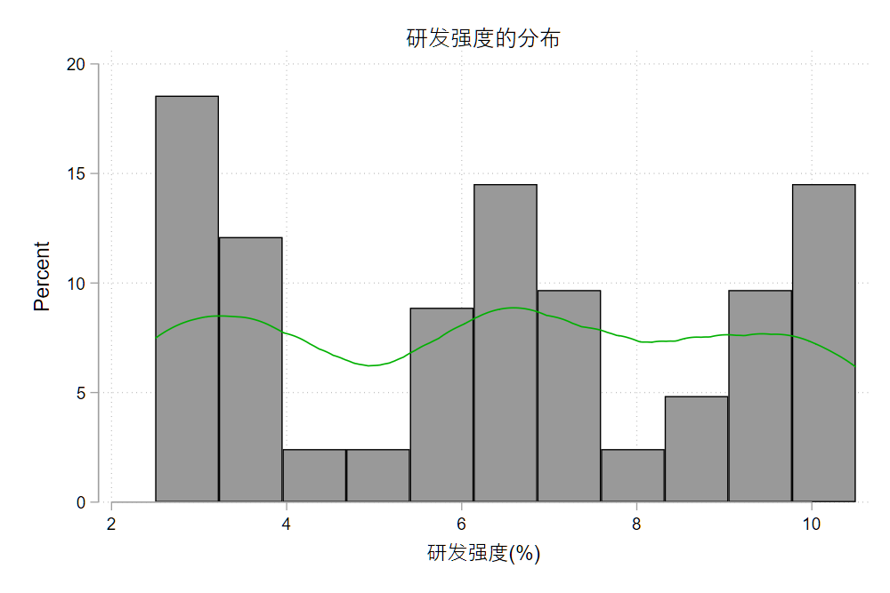
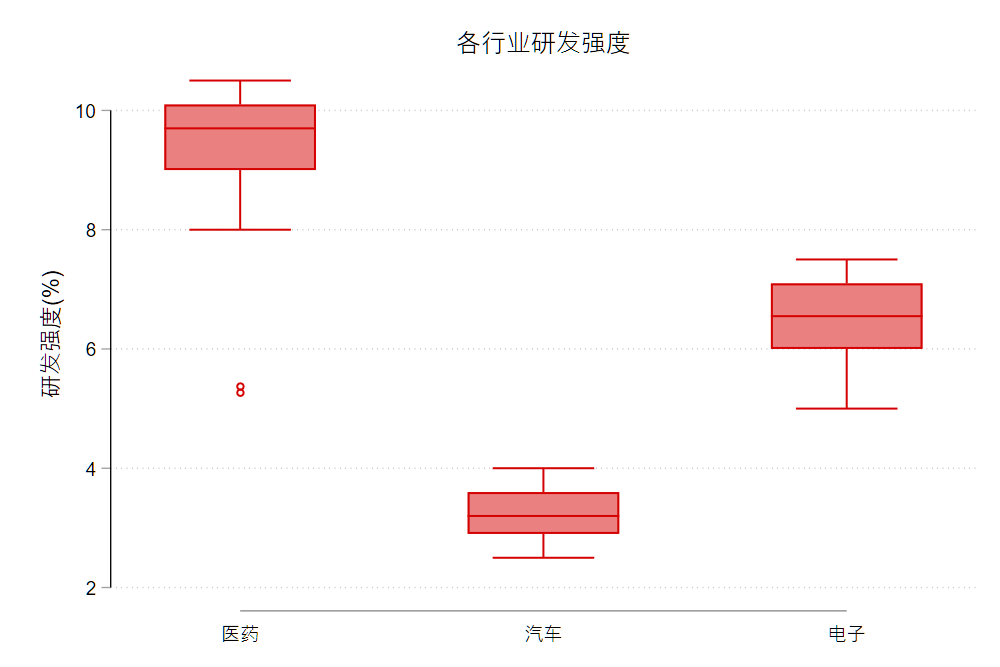
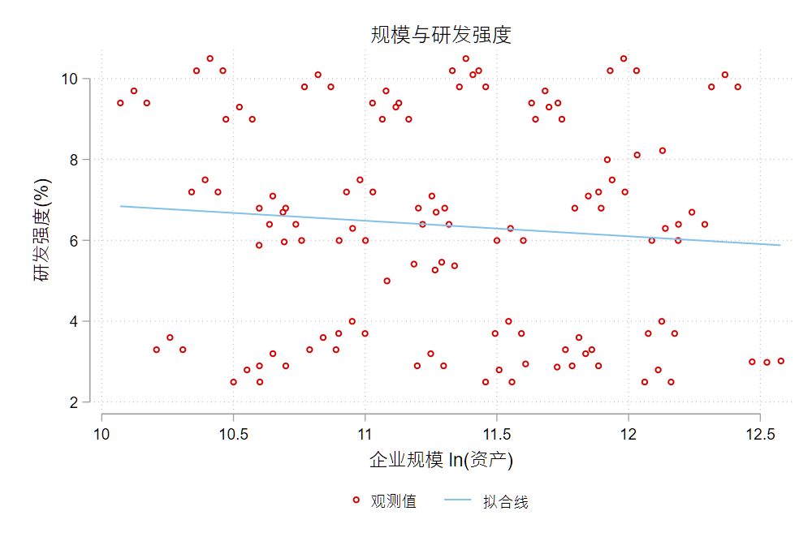
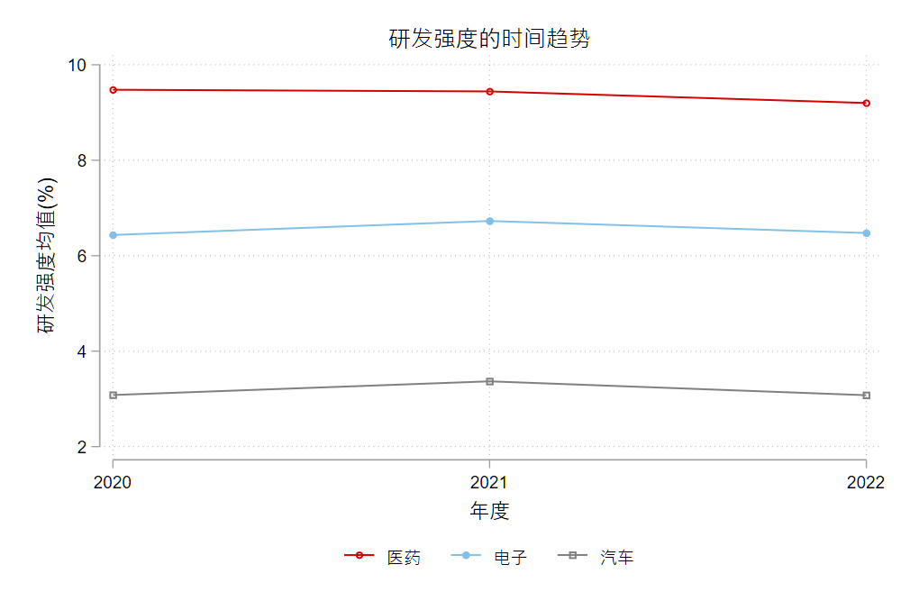
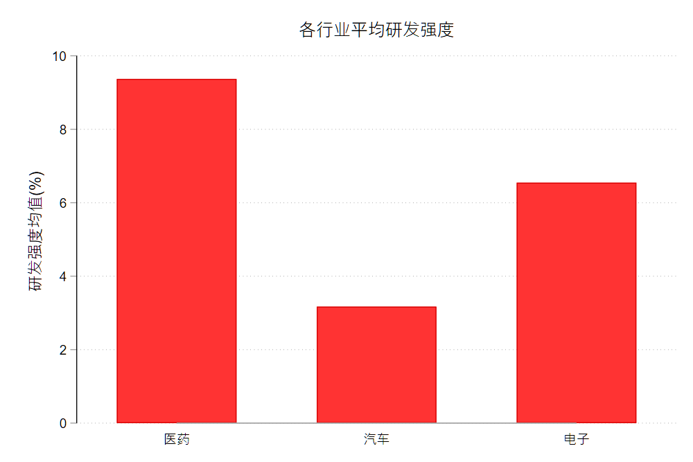

2 数据处理、探索性分析与样本构造
- 数据来源、数据字典和变量口径；
- 观察单位、数据颗粒度、主键和唯一性检查；
- 横截面、时间序列、面板数据和多层级数据；
- 数据合并、追加、聚合、频率转换和长宽转换；
- 缺失值、离群值、缩尾、截尾、对数转换和标准化；
- 字符变量、日期变量和简单文本变量处理；
- 探索性数据分析 (EDA)：直方图、密度图、箱线图、散点图、时间趋势图和分组均值图；
- 如何用图形检查变量分布、离群值、样本断点、组间差异和潜在样本选择问题；
- 样本筛选日志、变量字典、匹配率和样本流失检查；
- 数据处理过程的记录、复核和可复现性。
- 本讲用到的 skills：
core/04-data-cleaning-planner·core/06-repro-logger； - 可运行伴生文件：
examples/ch02/ch02_main.do、examples/ch02/ch02_python.ipynb。
2.1 一份数据的旅程
小林是一名经济学研究生。她想弄清一个并不复杂的问题：制造业上市公司的研发投入，是不是随着企业规模变大而变化，并且因行业而异？ 问题不难，难的是——要回答它，她得先有一张干净的数据。
她手上的原始文件是这样几份：
firm_finance_2021.dta、firm_finance_2022.dta——两批分开导出的公司财务表；industry_lookup.dta——一张行业代码对照表，同门整理后发来的；mktcap_monthly.dta——公司月度市值表，一家公司一年有十二行。
打开一看，问题不少：研发支出这一列，有的是空的，有的写着 -99；资产负债率不是数字，而是 "38.2%" 这样的文字；同一家公司的证券代码，在财务表里是 000101，到了市值表里却变成了 101——前导零悄悄没了；月度市值表里，一家公司一年十二行，而财务表里一年只有一行，两张表根本不在一个「颗粒度」上。
这些看起来都是「小毛病」。但正是这些小毛病，决定了最后能不能得到一份可信的数据。若对它们视而不见、直接开始 merge、reg，样本量可能莫名其妙地翻倍或腰斩，某个系数可能被一个录错的数字带偏，而你甚至不知道是哪一步出了错。
这一讲，我们就把这段路完整走一遍：从这几份凌乱的原始表，走到一张「一家公司一年一行、变量口径清楚、可以直接跑回归」的干净面板。沿途我们会不断停下来问同一类问题——不是「这条命令怎么写」，而是「这一步我在做什么判断，做完怎么知道自己没做错」。
一路上要回答的问题，串起来就是本讲的地图：
- 这份数据从哪来、每个变量到底量的是什么？(来源、口径与数据字典)
- 一行代表什么、这几张表能不能对齐？(观察单位、粒度与数据形态)
- 怎么把它们正确地拼成一张表，合并之后样本为什么变了？(合并、追加与聚合)
- 哪些变量不能直接用、该怎么处理？(缺失、离群与变换)
- 字符和日期这类「非数值」变量怎么办？
- 怎么用图形给数据做一次体检？(探索性分析与图形诊断)
- 怎么把整个过程记录下来，让别人 (和半年后的自己) 能复现？(日志、字典与匹配率)
- 最后，把这套做法用到一篇顶刊论文 Lane (2025) 的真实数据上，我们能不能复现它的数据处理、并验证结果？
过去学数据处理，学的是一串命令：merge、reshape、winsor2、destring……记住语法，套到数据上。
在 AI 和 Agent 辅助下，重点变了。你不必先背下每条命令的写法，但你必须能做到三件事：认清自己面对的是哪一类数据处理问题、把这个任务描述清楚、再调出合适的 skill 帮你完成——手头没有现成提示词时，还知道去哪里搜索和安装。可以这样理解：在 Agent 模式下，一个 skill 就相当于过去若干条命令的「有序打包」。
所以本章每遇到一类任务，都会用同一个小循环来讲：a. 场景 (为什么此刻需要它)→ b. 直觉 (讲人话、给直觉)→ c. 最小操作 (一两行看得懂的代码)→ d. 怎么检查 (结果对不对)→ e. 常见坑 (真实的翻车)。并在关键处配一个 callout 框，写清提示词和该调用的 skill。命令会忘，判断和这套工作方式不会。
还有一层意思，得在开头就挑明。这一整讲讲的常见操作、适用场景和陷阱，说到底都是为了安全地借 skills 和 agent 来清洗数据做准备。有了 AI，写清洗代码的门槛低了，风险却换了地方：agent 可能投机取巧，甚至为了凑出你后面想要的回归结果，在数据清洗和变量构造阶段悄悄做手脚。所以你得有警惕心，也得守住几条不可破除的红线——本讲末尾会把这些红线，连同「面对不同数据该调哪个 skill」一并交给你。前面每一节要练的判断，都是为了让你有能力看穿 agent 有没有偷工减料。
还记得上一讲打开 Lane (2025) 复现项目时，那一堆文件夹和脚本吗？本讲要补上的，正是其中最耗时、也最容易出错的一环：原始数据究竟怎么变成分析数据。相关背景见 第 1 讲。
2.2 动手之前先问三件事
拿到数据就急着 merge、急着 reg，是初学者最常见、也最贵的错。有经验的研究者会先停下来，问三件事：这份数据从哪来？每个变量到底量的是什么？有没有一份写清楚这些的说明书？在此之前，还有一件更基础的事——先把项目文件夹摆好。
2.2.1 先把项目文件夹摆好
很多人的数据处理，一开始就乱在文件夹上：原始数据、改了一半的数据、结果图表全堆在一个目录里，几个月后连哪份是原始数据都认不出。动手之前，先把项目结构摆好，这不是可选项，是可复现的地基。一个朴素好用的结构：
project/
├── data_raw/ 原始数据，只读，永不手动修改
├── data_clean/ 清洗好、可直接分析的数据
├── code/ 清洗与分析的 do 文件(按阶段编号：01_clean.do、02_merge.do…)
├── output/ 图表与结果
└── README.md 数据来源、处理顺序、变量定义最该记住的一条铁律：data_raw/ 只读，永不手动改。所有清洗都写成 do 文件、结果另存到 data_clean/；哪怕处理逻辑错了，原始数据永远能回溯重来。真正需要反复修改和保存的，是代码和 README，不是数据本身。这条习惯，本讲最后一节还会落到「留痕」上再讲一遍。
2.2.2 数据从哪来
同样叫「企业规模」，统计年鉴里的口径和上市公司年报里的口径可能完全不同；同样一个变量，公开调查数据和商业数据库的可得性、清洗程度、使用许可也各不相同。来源，决定了数据的口径、质量、边界和你能不能公开它。经管社科研究中，数据大致来自四类渠道：
- 公开统计：统计年鉴、国家统计局、世界银行 WDI 等，多为宏观或地区层面；
- 微观调查：CFPS、CHFS、CGSS 等入户或抽样调查，个体或家庭层面；
- 商业数据库：CSMAR、Wind、GTA 等，上市公司财务、治理、市场数据的主要来源；
- 文本与网络数据：公告、新闻、政策文件、网页抓取等非结构化来源。
每一类的具体获取方法 (接口、下载、抓取、清洗) 本讲不展开，详见 金融数据分析讲义-数据获取。本讲的重点，是拿到数据之后怎么判断和处理。
本讲这份数据就横跨了两类来源：财务表来自商业数据库导出，行业对照表由他人整理。来源一杂，格式和口径就容易打架——这也正是后面各种毛病的根源。
2.2.3 变量口径
口径，就是「这个变量到底量的是什么、怎么量的」。它常常藏在一个看似清楚的变量名背后：
- 「研发支出」是财报里费用化的研发费用，还是含资本化的研发投入总额？两者能差出不少；
- 「规模」用总资产、营业收入，还是员工人数？换一个，结论可能就变；
- 「资产负债率」是百分数 (
45.3) 还是小数 (0.453)？单位不统一，一取对数就出错。
口径不清，后面所有的处理和回归都建在流沙上。所以动手之前，先把每个关键变量的口径钉死。
2.2.4 数据字典
把上面这些「口径」逐一写下来，就成了一份数据字典 (codebook)：每个变量的名称、含义、单位、来源、口径和取值范围。它是一份数据最重要、却最常被跳过的文档。给上面那份财务表配一份字典，开头几行大概是这样：
| 变量 | 含义 | 单位 | 来源 | 口径 |
|---|---|---|---|---|
stkcd |
证券代码 | —— | 商业数据库 | 6 位，含前导零 |
sales |
营业收入 | 万元 | 商业数据库 | 合并报表口径 |
rd |
研发支出 | 万元 | 商业数据库 | 费用化，缺失以 -99 标记 |
lev |
资产负债率 | % | 商业数据库 | 期末，负债/资产 |
没有数据字典的数据，是一颗定时炸弹：你今天记得 rd 的缺失是 -99，三个月后就未必了。
数据字典不必从零手写。把原始表头和你了解的口径交给 AI，让它先起一稿，你再逐行核对补全——生成靠 AI，判断靠你。
任务说明书 (提示词模板)：
你是我的数据助手。下面是一份上市公司财务数据的变量清单(表头 + 前 5 行)：
[粘贴 describe 或前几行]
请据此生成一份数据字典草稿，列出每个变量的：中文含义、推测单位、可能的口径、取值范围
与异常值提示(如负值、明显离群、以特殊值标记的缺失)。凡是你不确定的口径，请单独标出、
让我确认，不要替我编造。推荐 skill：core/04-data-cleaning-planner(数据清洗计划师)。没有合适的提示词？ 去 附录 A 提示词模板 取用，或用 find-skills 检索、安装社区里的同类技能。
注意这里已经发生的转变：过去你要记住 codebook、describe 这些命令；现在你要会的，是把「我需要一份数据字典」这件事描述清楚，让 skill 帮你生成，再用你的专业判断把关。带着这份写好的字典，我们才敢去动下一步——先看清，这几张表到底长什么样。
2.3 认清你的数据
合并之前，先要看懂手里的每一张表到底是什么。这一步几乎不写代码，却决定了后面每一步是否走对。要问三个问题：一行代表什么？用什么能唯一确定一行？这是哪一类、哪一种形态的数据？
本讲的数据存放在课程 GitHub 仓库，可以直接联网调取，无需克隆本仓库。下面先约定一个数据路径全局宏 $D，后续各例都从它读取：
* 本讲数据(联网直接读取；若已克隆仓库，可把网址改成本地路径)
global D "https://raw.githubusercontent.com/lianxhcn/PXa2026a/main/examples/ch02/data"其中 firm_finance_2021.dta 收录 2020–2021 两年、firm_finance_2022.dta 收录 2022 年，是分两次导出的两批；下面先看第一批。
2.3.1 观察单位与粒度
先把表读进来，看它的结构和头几行：
use "$D/firm_finance_2021.dta", clear
describe
list in 1/4, clean noobsVariable Storage Display Variable label
name type format
------------------------------------------------
stkcd str6 %9s 证券代码
year int %8.0g
sales double %10.0g 营业收入(万元)
rd double %10.0g 研发支出(万元)
at double %10.0g 资产总额(万元)
lev str8 %9s 资产负债率(文本)
indcd str5 %9s 行业代码
stkcd year sales rd at lev indcd
000101 2020 82000 4100 65000 38.2% C39
000101 2021 96000 5200 72000 41.0% C39
000102 2020 51000 3000 40000 52.4% C39
000102 2021 57000 3400 44000 50.8% C39一行是一家公司在某一年的记录——000101 在 2020、2021 各占一行。我们把「一行代表什么」叫作数据的观察单位，把它的粗细叫作粒度 (granularity)。这张表的粒度是「公司-年度」。
粒度是数据处理里最容易被忽略、又最容易出错的概念。对照另外两张表就清楚了：行业对照表 industry_lookup.dta 一行是一个行业 (粒度更粗)，月度市值表 mktcap_monthly.dta 一行是一家公司的某一个月 (粒度更细)。粒度不同的表不能直接合并——这是下一节反复要处理的问题，这里先记住：动手合并前，先说清每张表的一行是什么。
2.3.2 主键与唯一性
能唯一标识一行的变量组合，叫主键。财务表的主键是「证券代码 + 年度」这一对，而不是证券代码本身。这不是凭感觉，而是要查：
duplicates report stkcd year
duplicates report stkcdDuplicates in terms of stkcd year
Copies | Obs Surplus
----------+-----------------
1 | 84 0 <- 每个 (stkcd, year) 只出现 1 次：唯一
Duplicates in terms of stkcd
Copies | Obs Surplus
----------+-----------------
2 | 84 42 <- 每个 stkcd 出现 2 次(两年)：单独不唯一stkcd year 的 Surplus 为 0，说明这对组合唯一，可以作主键；stkcd 单独的 Surplus 是 42，因为一家公司横跨两年。如果误把 stkcd 当主键去做一对一合并，样本就会错乱。想更严格，可以用 isid：
isid stkcd year // 若不唯一会直接报错，把问题挡在合并之前真实数据里，主键不唯一往往来自导出重复或口径不清；养成「合并前先查唯一性」的习惯，能挡掉后面一大半的样本量异常。
2.3.3 横截面、时序、面板与多层级
同样几张表，还可以按「有没有单位维度、有没有时间维度」分类：
- 横截面：一个时点、多个单位。
industry_lookup就是——一行一个行业，没有时间。 - 时间序列：一个单位、多个时点。比如单看某一家公司逐年的营收。
- 面板：多个单位 × 多个时点。财务表就是——多家公司、多年，兼有两个维度。
- 多层级：单位嵌套在更大的单位里。公司嵌套在行业、省份中，就是两层结构 (
industry_lookup正是把公司连到行业层的桥)。
分清类型，才知道能用什么工具。面板数据要用 xtset 声明个体和时间，之后才能算滞后、增长率、组内变化。不过 xtset 要求个体编号是数值，而这里的 stkcd 是字符——这个矛盾留到清洗时解决，先记下：声明面板结构，是面板分析的第一步。
2.3.4 扁平 (wide) 与长条 (long)
最后一个要练出直觉的，是数据的形态。看一个小例子——三个人、三年的收入 inc 和失业状态 ue，一开始长这样，是「扁平型」:
list, clean noobs id sex inc80 inc81 inc82 ue80 ue81 ue82
1 0 5000 5500 6000 0 1 0
2 1 2000 2200 3300 1 0 0
3 0 3000 2000 1000 0 0 1扁平型 (wide) 一行是一个个体，不同年份摊成不同列 (inc80、inc81……)。可大多数面板分析要的是「长条型」，用 reshape 转过去:
reshape long inc ue, i(id) j(year)
list in 1/9, clean noobs id year inc ue sex
1 80 5000 0 0
1 81 5500 1 0
1 82 6000 0 0
2 80 2000 1 1
2 81 2200 0 1
2 82 3300 0 1
3 80 3000 0 0
3 81 2000 0 0
3 82 1000 1 0转完之后，一行变成「一个人在某一年」，inc、ue 各成一列，年份进了 year 列。识别的窍门只有一句：看同一个个体是不是占了多行——占多行是长条，一行摊成多列是扁平。为什么要分清？大多数面板分析要长条型，而从网页、报表、问卷导出的原始数据常常是扁平的。本讲的财务表本就是长条的 (000101 两年占两行)；reshape 在真实面板上的更多用法，见下一节。
面对一堆来路不明的表，与其逐张手动 describe，不如让 agent 先跑一遍、把判断汇成一张待审清单，你只需确认或纠正，再决定怎么处理。这正是 AI 工作流的关键——先自动探索、生成清单，人确认后再动手，而不是让 agent 直接改数据。
任务说明书 (提示词模板)：
这里有若干 .dta / .csv 数据表：[列出文件]。请对每一张表逐一探索并报告，汇成一张待审清单：
(1) 观察单位与粒度(一行代表什么)；
(2) 主键候选(哪几个变量组合能唯一确定一行，并给出唯一性检查结果)；
(3) 数据形态(长条 long 还是扁平 wide)；
(4) 潜在问题：重复行、异常缺失、同名键的存储类型或大小写是否一致、粒度是否不齐。
只报告与提问，不要修改任何数据。我确认后再决定处理方式。推荐 skill：core/04-data-cleaning-planner。没有合适提示词？ 见 附录 A 或用 find-skills 检索安装。
看清了每张表是什么、粒度粗细、主键和形态，我们才有把握做下一件、也是数据处理里最容易翻车的事：把这几张表正确地拼成一张。顺带说一句，本讲最后会把这套「先看清结构」的做法，用到 Lane (2025) 那份真实的行业-年度面板上——你会发现，顶刊的分析数据，结构上和这里的财务面板并无二致。
2.4 合并、追加与聚合
把几张零散的表拼成一张分析面板，是数据处理里最耗时、也最容易翻车的一步。动手之前，先分清三类操作——它们改变数据的方式完全不同：
- 追加 (append)：两张结构相同的表首尾相接，行变多 (如分批导出的数据)；
- 合并 (merge)：按键把另一张表的列贴过来，列变多 (如把行业名贴到公司上)；
- 聚合 (collapse)：把细粒度压成粗粒度，行变少、粒度变粗 (如把月度压成年度)。
一句话记忆：加行用 append，加列用 merge，改粒度用 collapse。分不清这三者，就会用错工具、炸错样本。
2.4.1 追加 (append)
财务表是分两批导出的，先把它们摞成一张完整面板：
use "$D/firm_finance_2021.dta", clear
count
append using "$D/firm_finance_2022.dta"
count
isid stkcd year
tab year
tempfile panel
save `panel' // 存一份，后面合并要用 84 <- 追加前：84 行(2020–2021)
126 <- 追加后：126 行(多出 2022 的 42 行)
year | Freq. Percent
------------+--------------------
2020 | 42 33.33
2021 | 42 33.33
2022 | 42 33.33追加后行数从 84 变 126，isid stkcd year 没报错、tab year 三年各 42 家，说明摞得干净。append 有两个前提：两张表的变量要同名，且同名变量的存储类型要一致——若一份的 lev 是数值、另一份是字符，追加要么报错、要么把两列错误地并在一起。所以追加后，count 和 isid 是必做的两道检查。
2.4.2 关联变量 (key)
merge 靠一个 (或一组) 键变量把两张表对齐。初学者一大半的合并事故，都出在键上。把原则列成一张清单，动手前逐条对照：
- a. 键要同名——
merge按同名变量对齐，两表的键必须叫同一个名字； - b. 大小写、空格敏感——
"C36"和"c36 "是两个不同的键，差一个空格就对不上； - c. 存储类型一致——字符键和数值键对不上 (后面月度表就栽在这一条)；
- d. 主键唯一——做一对一 (
1:1) 合并前，先isid或duplicates report查唯一性； - e. 编码、前导零一致——
"000101"和101不是同一个键； - f. 合并后必查匹配率——用
_merge看谁没匹配上，别急着往下走。
这六条，正好对应本讲数据里埋着的几处毛病。下面就撞上其中两条。
2.4.3 横向合并 (m:1)
合并之前，先分别看清两份数据，尤其是那个关联的键。主表这边，每行是一个公司-年度，键是行业代码 indcd:
list stkcd year indcd in 1/6, clean noobs stkcd year indcd
000101 2020 C39
000101 2021 C39
000102 2020 C39
000102 2021 C39
600201 2020 C27
600201 2021 C27对照表那边，每行是一个行业，键同样是 indcd:
use "$D/industry_lookup.dta", clear
list, clean noobs indcd indname
C39 计算机、通信和其他电子设备制造业
C27 医药制造业
c36 汽车制造业两份数据粒度不同 (一个是公司-年度、一个是行业)，靠 indcd 把行业名贴到每个公司-年度上，这是多对一 (m:1) 合并。但动手前务必盯住键：主表里是 "C36"，对照表里却写成了小写带空格的 "c36 "——就这一点差别，足以让合并悄悄出错。数据合并十有八九，栽在没吃透两份数据、尤其没对齐键上。 先直接合并，看它怎么栽:
use `panel', clear // 重新载入前面 append 好的面板
merge m:1 indcd using "$D/industry_lookup.dta"
tab _merge
list stkcd year indcd _merge if _merge==2 // 看那条用不上的脏键 Result Number of obs
-----------------------------------------
Not matched 43
from master 42 (_merge==1)
from using 1 (_merge==2)
Matched 84 (_merge==3)
-----------------------------------------
Matching result from merge | Freq. Percent
------------------------------+------------------
Master only (1) | 42 33.07
Using only (2) | 1 0.79
Matched (3) | 84 66.14
stkcd year indcd _merge
. . c36 Using only (2)只有 84 行匹配上，匹配率 84/126 ≈ 67%。两类没匹配上的行泄露了原因：42 行 C36 的公司是 master only(面板里有、对照表里没有)，而那条 c36 是 using only(对照表里有、面板里用不上)。一对照就明白——对照表里汽车业的键写成了小写带空格的 "c36 "，和面板里的 "C36" 对不上。那条 using-only 记录，就是「键没洗干净」最典型的信号。
把键洗干净 (转大写、去空格)，再合并一次：
use "$D/industry_lookup.dta", clear
replace indcd = upper(strtrim(indcd)) // "c36 " -> "C36"
tempfile look
save `look'
use `panel', clear // panel 是前面 append 好的面板
merge m:1 indcd using `look'
tab _merge Result Number of obs
-----------------------------------------
Not matched 0
Matched 126 (_merge==3)
-----------------------------------------126 行全部匹配，匹配率 100%。请把顺序记牢：merge 之后第一件事就是 tab _merge 看匹配率；匹配率偏低，几乎总是键的问题，先回头洗键，别让缺胳膊少腿的数据流到回归里。
合并前，把两张表的粒度、键和合并类型描述给 AI，让它先替你把关——尤其是 1:1 还是 m:1、键要不要先清洗、合并后该期望多少匹配率。判断仍由你拍板，但 AI 能提前拦下大多数低级错。
任务说明书 (提示词模板)：
我要把两张表合并。表 A：[粒度、主键、行数]；表 B：[粒度、主键、行数]。
我打算用 [键] 做 [1:1 / m:1] 合并。请检查：
(1) 这个合并类型对不对？两边键的唯一性是否支持它？
(2) 两边的键在名称、大小写、空格、存储类型、前导零上是否一致？可能哪里对不上？
(3) 合并后我应该预期多大的匹配率？出现 master-only / using-only 各说明什么？
只做检查与提问，先不要写最终代码。推荐 skill：core/04-data-cleaning-planner。没有合适提示词？ 见 附录 A 或用 find-skills 检索安装。
2.4.4 聚合与频率转换
月度市值表 mktcap_monthly 要并进公司-年度面板，可两张表的粒度不一样：一个是公司-月，一个是公司-年度。这时候最常见的翻车，就是不管粒度直接合并。先验证一下月度表到底是什么粒度：
use "$D/mktcap_monthly.dta", clear
gen int year = int(ym/100) // 202103 -> 2021
duplicates report stkcd yearDuplicates in terms of stkcd year
Copies | Observations Surplus
----------+------------------------
12 | 504 462 <- 一个公司-年度有 12 行：远非唯一一个「公司-年度」占了 12 行 (12 个月)。若强行按 stkcd year 做 1:1 合并会直接报错；若用 m:1、m:m 硬合，则会把面板炸成一堆重复行。正确的顺序是：先把月度聚合到公司-年度 (这一步既是频率转换，也是聚合)，再合并。
collapse (mean) mktcap, by(stkcd year) // 月 -> 年，取年均市值
duplicates report stkcd year // 现在唯一了
tostring stkcd, replace format(%06.0f) // 数值 101 -> 字符 "000101"，补回前导零
list in 1/3, clean noobsDuplicates in terms of stkcd year
Copies | Observations Surplus
----------+------------------------
1 | 42 0 <- 聚合后：公司-年度唯一
stkcd year mktcap
000101 2021 391.28333
000102 2021 223.25833
000201 2021 658.84167这里顺手补上了 key 原则的第 c、e 条：月度表的 stkcd 存成了数值 101，和面板里的字符 "000101" 类型不同、还丢了前导零，tostring ... format(%06.0f) 把它转回六位字符键。到这一步，聚合后的年度市值已是干净的公司-年度粒度、键也对得上，再 merge 1:1 stkcd year 就能安全并入主面板 (本例市值只覆盖 2021 年，并入后其余年份的市值为缺失，这也是真实数据的常态)。
2.4.5 长宽转换 (reshape)
有时还要在长条与扁平之间来回变形。把面板的营收摊成「每公司一行、各年一列」，用 reshape wide：
use "$D/firm_finance_2021.dta", clear
keep stkcd year sales
reshape wide sales, i(stkcd) j(year)
list in 1/6, clean noobs stkcd sales2020 sales2021
000101 82000 96000
000102 51000 57000
000301 210000 231000
000302 95000 101000
200001 27793 29256
200002 30101 31686reshape long sales, i(stkcd) j(year) 再变回长条。记住两个选项：i() 是保持不变的个体，j() 是要摊开或合拢的维度。大多数面板分析要长条型，而从网页、报表导出的数据常是扁平的，reshape 就是两者之间的桥。
到这里，几张零散的表已经拼成一张「公司-年度、带行业名、带年度市值」的面板。回头看，每一步靠的都不是记住某条命令，而是先想清粒度和键、动手后用 isid、_merge、duplicates 去查。本讲最后复现 Lane (2025) 的数据时，你会看到同样的动作：把政策行业交叉表按行业代码 merge 进面板——键就是行业代码，检查方式一模一样。
2.5 变量能直接用吗
表拼好了，变量却未必能直接进回归。这一节处理四件事——缺失、离群、对数、标准化——它们有一个共同的做法：先看，再决定，尤其是先画图。判断永远在动手之前。下面接着上一节 append 好的面板往下做，并把绘图模板设为 cleanplots(ssc install cleanplots 一次即可)。
set scheme cleanplots2.5.1 缺失值
财务表的 rd 有的是空、有的写着 -99。这个 -99 是人为标记的缺失，却伪装成一个数字——若不处理，它会被当成真实研发支出，算进均值、跑进回归。第一步是把它还原成真正的缺失：
mvdecode rd, mv(-99) // 把 -99 全部替换为缺失 .
count if missing(rd)
misstable summarize rd, allrd: 1 missing value generated
2 <- rd 现在共有 2 个缺失(原本的空 + 还原的 -99)
| | Unique
Variable | Obs=. Obs>. Obs<. | values Min Max
-------------+--------------------------------+----------------------
rd | 2 124 | 121 993 21936这里藏着一个经典的坑：在 Stata 里，缺失 . 大于任何数字。所以 count if rd>10000 会把缺失也数进去，keep if rd<. 之类的写法必须小心。好在 summarize、regress 这些命令会自动忽略缺失——但 count、keep 不会。先把伪装的缺失还原，是一切的前提。
2.5.2 离群值
sales 里可能有异常大的值。先看统计量，再画图：
summarize sales, detail
histogram sales, percent xtitle("营业收入(万元)")
graph box sales 营业收入(万元)
-------------------------------------------------
Percentiles Largest
50% 85370.5 231000
75% 145827 242112 Mean 109905.8
95% 223839 245000 Skewness 6.348803
99% 245000 1080000 Kurtosis 58.35257
偏度高达 6.35、箱线图上那个孤零零飞出去的点，都在喊「这里有离群值」。但离群不等于错误——处理之前，必须先查清它到底是什么：
list stkcd year sales if sales>500000, clean noobs stkcd year sales
000101 2022 1080000这是 000101 在 2022 年的营收。它别的年份都在 10 万上下，这里却是 108 万——多打了一个 0，是录入错误。对于这种能查明的错误，正确的做法是改对它，而不是缩尾：
replace sales = 108000 if stkcd=="000101" & year==2022只有对无法核实、但确实极端的值 (不是错误，就是天生很大或很小)，才轮到缩尾和截尾出场：
winsor2 sales, cuts(1 99) // 缩尾：把 1%/99% 之外的值拉回分位点，样本量不变
winsor2 sales, cuts(1 99) trim // 截尾：直接删掉极端值，会损失样本缩尾把过大过小的值拉回到分位点上，保留样本量；截尾干脆删掉它们，样本变少。二者都不该在「看图、查明」之前就无脑套用——否则要么掩盖了本可修正的错误，要么扭曲了真实的分布。顺序永远是：先画图 → 查明来源 → 能改的改，改不了的再缩尾或截尾。
这几个概念初学者最容易混。可以让 AI 结合你具体的变量把它们讲清楚，并给出何时用哪一个的判断依据——但最终用不用、怎么用，由你根据数据和研究问题决定。
任务说明书 (提示词模板)：
针对我的变量 [变量名、含义、分布特征(偏度、极值、缺失比例)]，请分别解释：
缺失、离群、缩尾(winsorize)、截尾(trim)、对数转换——各自解决什么问题、代价是什么、
会如何改变后续回归系数的含义。并给出：对我这个变量，你建议先做哪一步、为什么。
不要替我下结论，把判断依据摆出来让我选。推荐 skill：core/04-data-cleaning-planner。没有合适提示词？ 见 附录 A 或用 find-skills 检索安装。
2.5.3 对数转换
资产、营收这类变量往往右偏——大多数不大，少数很大。回归里常对它们取对数：
gen double size = ln(at) // size 即「企业规模」的常用度量
histogram at, percent
histogram size, percent
对数把「大的压得多、小的压得少」，让右偏的分布更对称，也把变量间的乘法关系变成加法关系 (这正是弹性解释的由来)。两点要记住：取对数后系数的含义会变 (变成半弹性或弹性)，解释要相应改口；而且 ln() 要求正值，0 和负数会变成缺失，取对数前先检查。
2.5.4 标准化
有时要把变量标准化到「均值 0、标准差 1」(z-score)，便于跨变量比较，或供某些方法使用：
egen z_size = std(size)
summarize size z_size Variable | Obs Mean Std. dev. Min Max
-------------+------------------------------------------------
size | 126 11.315 .625 10.070 12.578
z_size | 126 ~0 1 -1.993 2.021标准化不改变分布的形状，只是换了把尺子：减去均值、除以标准差，之后「一个单位」就等于「一个标准差」。
回头看这一节，没有一步是「因为命令该这么写」。每一步都是先看 (统计量、图形)、判断 (是错误还是真离群？要不要变换？变换后怎么解释？)、再动手，动手之后再回看。缺失怎么补、离群怎么处理、要不要取对数，都没有唯一正确答案，取决于你的数据和研究问题——这恰恰是研究者不能外包给 AI 的那部分判断。
2.6 字符与日期变量
有些变量看着是数字或日期，却以文本存着，直接拿去计算会报错，或者更糟——悄悄算错。这一节做三件事：把文本型数字转成数值、把字符日期转成真日期、以及对文本变量该有的意识。判断的核心始终是一句话：先看清它现在是什么类型、该是什么类型。
2.6.1 文本型数字 (destring)
lev(资产负债率) 存成 "38.2%"，是字符——直接求均值、跑回归都会出错。用 destring 转成数值：
use "$D/firm_finance_2021.dta", clear
destring lev, gen(lev_num) percent
list stkcd year lev lev_num in 1/4, clean noobslev: character % removed; lev_num generated as double
stkcd year lev lev_num
000101 2020 38.2% .382
000101 2021 41.0% .41
000102 2020 52.4% .524
000102 2021 50.8% .508percent 选项会去掉 % 并除以 100，得到 0–1 的比率。但不是所有「看着是数字」的文本都该转。stkcd 也全是数字 ("000101")，可它是编号 (标签)，不是量——destring 会把它变成数值 101，丢掉前导零，键就废了。所以规则很简单：是「量」(要参与计算) 就转数值；是「编号、标签」就保持字符。见到文本型数字，先问它是量还是编号，再决定动不动 destring。
2.6.2 类别文本 (encode)
indcd 的 "C39"、"C27"、"C36" 是类别标签。有些分析 (比如放进 i.industry 做固定效应) 需要数值型的类别。encode 把文本类别转成「带标签的数值」：
encode indcd, gen(ind_id)
label list ind_idind_id:
1 C27
2 C36
3 C39encode 自动建了一张「数字 ↔︎ 文字」对照表 (value label)：数据里存的是 1/2/3，显示出来还是 C27/C36/C39；decode 则反向还原。destring 和 encode 的分工要记住：数字被误存成文本，用 destring(或 real()) 还原；观察值本身就是文字类别，用 encode 给它编号。一个还原数字，一个给文字贴号。
2.6.3 日期变量
日期常以文本 ("2021-06-30") 或数字 (20210630) 存着。要先把它变成 Stata 的日期值，才能排序、算间隔、按频率聚合：
clear
input str10 rptdate
"2021-06-30"
"2022-03-31"
end
gen d = date(rptdate, "YMD") // 第二个参数告诉 Stata 顺序是「年-月-日」
format d %td // 显示成人类可读的日期
gen year = year(d)
gen month = month(d)
list, clean noobs rptdate d year month
2021-06-30 30jun2021 2021 6
2022-03-31 31mar2022 2022 3date(字符, "YMD") 里的 "YMD" 告诉 Stata 按「年月日」解析；format d %td 让它显示成 30jun2021(内部其实是从 1960-01-01 起算的天数)；之后 year()、month()、qofd() 等函数随手取。两个坑：顺序参数要对 ("YMD" 还是 "MDY")；纯数字型日期 (20210630) 要先 tostring 再 date，或直接用 substr 拆出年月日。
2.6.4 文本变量：交给技能
传统教学到这里会讲一大套——用 regexm、split、substr 从「中国农业银行深圳光明支行」里抠出总行名和城市。在 AI 工作流下，你不必记这些代码，但必须有意识：认出「这是一个文本处理任务」、能把它描述清楚、调出合适的 skill 来做。
遇到公司名、地址、公告文本这类需要「从一串文字里抽取信息」的任务，别急着自己写正则，先把任务描述清楚交给 AI 与技能。
任务说明书 (提示词模板)：
我有一列公司全称，如「中国农业银行深圳光明支行」「招商银行股份有限公司兰州分行」，
想从中提取：(1) 总行名称(如「中国农业银行」)；(2) 所在城市。
请先规划处理步骤，再生成可运行代码；对拿不准的匹配规则，先列出让我确认，不要硬编造。推荐 skill：core/04-data-cleaning-planner；文本量大或较专门时，用 find-skills 检索安装专门的文本处理技能。正则表达式与 split 的代码细节本讲不展开 (属传统命令教学)，延伸阅读处给链接。
字符与日期处理，关键从来不是背下 destring、encode、date 的语法，而是先判断它现在是什么、该是什么——是量还是编号？是日期还是文本？判断对了，用哪条命令、哪个 skill，自然一目了然。
2.7 探索性分析与图形诊断
探索性数据分析 (EDA) 不是论文里那几张精修的图，而是你在清洗和建模的每一步都该做的体检。它的关键在一句话：每一张图，都是为了回答一个具体的问题。这一节把六类常用图和它们各自要查的问题对上号。
先分清两种图。探索性图形是画给自己看的——要快、要多、可以糙，目的是发现问题；解释性图形是画给读者看的——一张图只讲一件事、需要精修。EDA 阶段要的是前者：多画几张、快速扫过，把数据的毛病和结构看出来。
本节的图都基于上一节清洗好的面板，并构造两个变量：研发强度 rd_ratio(研发支出占营收的百分比) 和企业规模 size(资产的对数)，再按行业分组：
use "$D/firm_finance_2021.dta", clear
append using "$D/firm_finance_2022.dta"
mvdecode rd, mv(-99)
replace sales = 108000 if stkcd=="000101" & year==2022 // 修正上一节发现的录入错误
gen double rd_ratio = 100*rd/sales // 研发强度(%)
gen double size = ln(at) // 企业规模
gen str6 ind_s = cond(indcd=="C39","电子", cond(indcd=="C27","医药","汽车"))2.7.1 分布：直方图与密度图
要查的问题：这个变量分布是什么形态？偏不偏？要不要变换？
histogram rd_ratio, percent kdensity xtitle("研发强度(%)")
直方图看形状，叠加的核密度曲线 (kdensity) 把形态描得更平滑。这里研发强度大致落在 2%–10%，并不是单峰——隐约能看出几处聚集。这个信号提醒我们：也许背后藏着分组结构 (后面散点图会证实)。若图形明显右偏，就回到上一节考虑取对数。
2.7.2 离群与组间：分组箱线图
要查的问题：各组的分布和离群怎样？组间有没有差异？
graph box rd_ratio, over(ind_s)
一张图同时回答了两个问题。三个行业的箱体高低分明——医药最高、电子居中、汽车最低，组间差异一目了然；而医药组里还浮着一个孤立的点，那是这一组的离群值。over() 把分组直接摆在横轴上，不需要图例。
2.7.3 关系：散点图
要查的问题：两个变量怎么关联？有没有异常点或隐藏的分层？
twoway (scatter rd_ratio size) (lfit rd_ratio size), ///
legend(order(1 "观测值" 2 "拟合线") pos(6) rows(1))
拟合线几乎水平，似乎「规模和研发强度没什么关系」——但散点暴露了一件更重要的事：所有点分成了上、中、下三条带，那正是三个行业。也就是说，表面上的「无关」，背后其实是行业在主导。散点图让你看见了这种隐藏的分层，提醒你：若不加区分地对全样本回归，很可能把行业差异误当成别的东西。这就是图形帮你发现潜在样本结构与选择问题的价值——比任何统计量都直观。
2.7.4 趋势：时间趋势图
要查的问题：变量随时间怎么变？各组趋势一样吗？有没有断点？
preserve
collapse (mean) rd_ratio, by(ind_s year)
twoway (connected rd_ratio year if ind_s=="医药") ///
(connected rd_ratio year if ind_s=="电子") ///
(connected rd_ratio year if ind_s=="汽车"), ///
legend(order(1 "医药" 2 "电子" 3 "汽车") pos(6) rows(1)) xlabel(2020 2021 2022)
restore
三个行业的研发强度逐年都很平稳、层次稳定。真正要警惕的是突变：如果某一年出现跳变，就得回头查清楚——是政策冲击、是统计口径变了，还是数据出了错 (样本断点)。趋势图正是用来第一时间发现这种断裂的。
2.7.5 组间均值：分组均值图
要查的问题：各组的平均水平差多少？
graph bar (mean) rd_ratio, over(ind_s) ytitle("研发强度均值(%)")
把箱线图的「分布」进一步压成「一个数」：医药 9.37%、电子 6.55%、汽车 3.17%(对应 tabstat rd_ratio, by(ind_s))，组间高下立判。分组均值图适合快速比较组间水平，但也因为只剩一个数，会掩盖组内的离散和离群——所以它常和箱线图搭配使用，一个看水平、一个看分布。
2.7.6 一图一问清单
回过头看，六类图各司其职，对应着数据处理里最该盯的几个问题：
| 要查什么 | 用哪张图 |
|---|---|
| 分布形态、要不要变换 | 直方图 / 密度图 |
| 离群值 | 箱线图 |
| 组间差异 | 分组箱线图 / 分组均值图 |
| 两变量关系、异常点、隐藏分层 | 散点图 |
| 时间变化、样本断点 | 时间趋势图 |
| 潜在样本结构与选择 | 分组散点 / 分组密度 |
不确定一个变量该画什么图来检查，就把它的类型和你关心的问题交给 AI，让它列一份 EDA 图形清单，并说明每张图能查出什么。
任务说明书 (提示词模板)：
我有以下变量：[逐个列出：名称、类型(连续/类别/时间)、含义]，研究问题是 [一句话]。
请建议一套探索性图形(EDA)清单：每一项写清「画哪种图、对哪些变量、能帮我检查什么问题」，
并优先安排最可能暴露数据问题(离群、缺失、分组结构、样本选择)的图。
给出可运行的 Stata 代码骨架，图例统一放图形下方。推荐 skill：core/04-data-cleaning-planner。没有合适提示词？ 见 附录 A 或用 find-skills 检索安装。
一句话收束：EDA 的精髓是一图一问——先想清要检查什么，再选图；图是用来发现问题的，不是用来装饰论文的。清洗、变换、建模的每一步，都该顺手画一张图回头看看。
2.8 留痕与可复现
一份干净的面板有了。可如果别人 (或半年后的你) 问一句：这张表怎么来的？样本为什么正好是这么多？每个变量什么口径？——你答得上来吗？答不上来，就等于不可复现。这一节讲三样必须随数据一起留下的东西：样本筛选日志、变量字典、匹配率与样本流失，外加两条最省心的习惯。
2.8.1 样本筛选日志
从原始数据走到分析样本，每筛一次就记一笔——留下「样本量是怎么变的」这本账。做法很朴素，就是在每一步后 count：
use "$D/firm_finance_2021.dta", clear
append using "$D/firm_finance_2022.dta"
count // 步骤 0
mvdecode rd, mv(-99)
replace sales = 108000 if stkcd=="000101" & year==2022 // 修正录入错误，不删样本
gen double rd_ratio = 100*rd/sales
drop if missing(rd_ratio)
count // 步骤 1把这些数整理成一张筛选日志：
| 步骤 | 操作 | 样本量 | 变化 |
|---|---|---|---|
| 0 | 追加两批财务表 | 126 | — |
| 1 | 剔除研发支出缺失 | 124 | −2 |
| 2 | 合并行业名 (匹配率 100%) | 124 | 0 |
注意那条离群的营收 (000101) 是修正、不是删除，所以样本量不减。有了这本账，「样本为什么是 124」一目了然，审稿人问起一句话答清；反过来，若哪一步样本莫名掉了一大截，日志会第一时间报警。
2.8.2 匹配率与样本流失
merge 是最容易悄悄丢样本的地方，所以每次合并后都记下 _merge 的分布 (匹配率) 和前后行数：
merge m:1 indcd using `look' // look 是清洗过键的行业对照表
tab _merge Matching result from merge | Freq. Percent
------------------------------+------------------
Matched (3) | 124 100.00这次匹配率 100%、零流失。回想上一节：同样的合并，脏键时匹配率只有 67%——那不是数据少了，而是键没洗干净。若匹配率偏低又没有记录，你很可能拿着缺了三分之一的样本还浑然不觉。 匹配率就是合并这一步的安全带。
2.8.3 变量字典
给分析样本里的关键变量做一张字典，交代 N、取值范围和含义。codebook ..., compact 一行就能生成一份雏形：
codebook stkcd year rd_ratio size lev_num, compactVariable Obs Unique Mean Min Max Label
-----------------------------------------------------------------------
stkcd 124 42 . . . 证券代码
year 124 3 2021.008 2020 2022 年度
rd_ratio 124 124 6.364036 2.498888 10.5012 研发强度(%)
size 124 124 11.31305 10.07002 12.57764 企业规模 ln(资产)
lev_num 124 43 .4475242 .3 .59 资产负债率这里藏着一个提醒：stkcd 的均值是「.」，因为它是编号、不是量 (呼应上一节的判断)；而字典能生成得这么整齐，前提是你给每个构造出来的变量 (rd_ratio、size) 都写了 label variable——没写标签的变量，就是没写清口径的变量。字典让变量口径不会随时间失忆 (这正是 §2.1 那份数据字典的延续，只不过现在是分析样本的版本)。
处理做完，让 AI 读你的 do 文件，替你把日志和变量说明的初稿整理出来，你再核对补全。
任务说明书 (提示词模板)：
下面是我的数据处理 do 文件：[粘贴]。请据此生成两份文档：
(1) 样本筛选日志：逐步列出每一步操作、样本量、增减和筛选理由；
(2) 变量构造说明：每个衍生变量的定义、公式、单位、口径。
对代码里没交代清楚的口径或理由，请标出来让我补充，不要替我编造。推荐 skill：core/06-repro-logger(复现日志器)。没有合适提示词？ 见 附录 A 或用 find-skills 检索安装。
2.8.4 两条最省心的习惯
data_raw只写不改：原始数据放进一个只读的data_raw/文件夹，所有清洗都写成代码、结果输出到别处，原始文件永不手动改。这样任何时候都能从原始数据一键复现——这是 Gentzkow 和 Shapiro《Code and Data for the Social Sciences》反复强调的一条。- 文件命名说人话：文件名带上内容、粒度和时间范围，如
firm_year_clean_2020_2022.dta，而不是data_final_v3_really_final.dta。半年后你会感谢自己。
这两条都不花时间，却能把「复现」从一句空话变成随手可做的事。
样本日志、变量字典、匹配率——这三样不是交差用的附件，而是你自己的保险。数据处理里最贵的从来不是算力，是「三个月后没人 (包括你) 说得清这份数据怎么来的」。留痕，就是给未来的自己和读者留一条回得去的路。下一节复现顶刊数据时，正是靠这条路，我们才谈得上可控、可复现、可验证。
2.9 复现 Lane 的一小段
前面所有的本事——看结构、合并、清洗、构造变量、留痕——现在把它们用到一篇真论文上。我们拿 Lane (2025, QJE) 那篇关于韩国重化工业政策的文章，打开它的复现包，用 AI 与 Agent 的工作流复现其数据处理的一小段，并验证结果。目标不是把整篇复现完，而是学会一件事：借助 AI 处理真实数据时，怎么保证整个过程可控、可复现、可验证。
2.9.1 复现包里有什么、没有什么
打开 Lane 的复现包，先看它的数据文件夹——data/input/ 里的文件名都带着 _cleaned4reg(cleaned for regression，供回归用的干净数据)，而 data/intermediate/ 是空的 (运行时才填回归结果)。这透露了一个重要事实：这个包给你的是已经清洗好的分析面板，而从原始数据 (韩国工业普查、贸易数据、投入产出表) 到这份干净面板的清洗过程，作者放在了上游、没有随包发布。
这是复现的第一课：顶刊复现包常常只给 cleaned data。学会识别数据的三个层次——原始 (raw)/ 清洗后 (cleaned)/ 结果 (results)——你才知道自己站在链条的哪一环、能复现哪一段。所以本节要做的，不是「从原始造干净」(那段作者没给)，而是从作者的干净面板出发，做我们能做、也最能学到东西的几步数据处理动作。相关的项目结构见 第 1 讲。
2.9.2 认结构、构造处理变量
打开主分析面板，用上这一讲开头就练的「先看清结构」的本事：
* 数据来自 Lane (2025) 的 Dataverse 复现包(下载方法见本节末的 callout)
use "replicationpackage/data/input/mms_merged_harmonized_panel_cleaned4reg_5digit.dta", clear
describe, short
codebook hci year, compactObservations: 4,726
Variables: 28 Sorted by: id year
Variable Obs Unique Mean Min Max Label
-----------------------------------------------------------------------
hci 4726 2 .366907 0 1 Heavy and Chemical Industry ...
year 4726 17 1978 1970 1986 Year一眼就能认出：这是一个行业-年度面板 (id 是 5 位行业代码、year 是年份)，和本讲小林的公司-年度面板结构同构——只不过观察单位是「行业」而非「公司」。主键是 id year，hci 是「是否重化工目标行业」的哑变量 (约 37% 的行业-年被列为目标)。
接着构造处理变量——这正是 §2.4 讲的变量构造，用在真数据上。韩国 1973 年启动重化工业化政策，目标行业即处理组。Lane 用一行代码合成处理变量：
gen treat = (hci==1 & year>=1973) // 目标行业 × 政策启动后
tab treat treat | Freq. Percent
------------+------------------
0 | 3,298 69.78
1 | 1,428 30.22一行代码，把「政策目标行业」和「政策时点」合成了处理变量 (1428 个行业-年进入处理组)——这就是第 1 讲说的「政策怎么进入数据」。你已经能读懂、也能复现顶刊的这一步了。
2.9.3 可控、可复现、可验证
现在把 AI 放进来。复现常常撞上多语言：Lane 的估计用 Stata、出图表用 R。假设你面对的是作者的一段 R 代码 (比如读入某张政策表、改列名、按行业码 merge)。传统做法要么手敲、要么直接跑作者代码；AI 工作流的做法是：
- 可控：让 AI 把作者的 R 片段翻译成你熟悉的 Stata / Python(就是 §2.4 那条「翻译」协作)，你逐行看懂、确认逻辑，而不是黑箱照跑；
- 可复现：你自己的每一步都写成代码，配上样本筛选日志和变量字典 (§2.7)，别人能从原始复现包一键重跑；
- 可验证：把作者的原始代码借 AI 跑一遍，做成一个对照测试版；用它的结果和你 AI 复现的结果逐项比对。
比对就照一张检查清单来，一项一项打勾：
| 检查项 | 作者原版 | 我的 AI 复现版 | 一致 |
|---|---|---|---|
| 观测数 | 4,726 | 4,726 | 是 |
| 处理组占比 | 30.2% | 30.2% | 是 |
主键 id year 唯一 |
是 | 是 | 是 |
万一某项对不上，回退——不是去改数据迁就结果，而是回头查：是提示词哪里描述不清？哪一步逻辑翻译错了？改提示词或步骤，再跑一次。这个「发现偏差 → 回退修正」的循环，正是 AI 数据处理可靠性的来源。
Lane 的复现数据公开在 Harvard Dataverse(DOI 10.7910/DVN/VJECHN)。学会按 DOI 自动下载整个复现包，以后处理任何论文都省事——不必手动一个个点。Dataverse 提供按 DOI 打包下载的 API，大致形如：
curl -L -o lane2025_replication.zip \
"https://dataverse.harvard.edu/api/access/dataset/:persistentId/?persistentId=doi:10.7910/DVN/VJECHN"任务说明书 (提示词模板)：
我要从 Harvard Dataverse 下载 DOI 为 10.7910/DVN/VJECHN 的复现包(整包 zip)。
请生成一段可运行的下载脚本(curl 或 Python 均可)，并核对 Dataverse 当前的下载 API 端点是否正确；
下载后解压，并列出其目录结构，帮我快速找到主脚本和数据文件夹。推荐 skill：core/03-replication-navigator(复现包导航，见第 1 讲)；不确定端点时用 find-skills 或让 AI 先核对官方 API 文档，不要照抄未经验证的地址。
走完这一段，回头看整讲——你不再是「记住 merge、collapse、destring 怎么写」，而是：面对一份真实数据，能看清它的结构和层次、描述清楚要做什么、调出合适的技能去做，并用日志和对照守住可控、可复现、可验证。这就是 AI 时代做数据处理的样子：把命令交给技能，把判断留给自己。
2.10 经验法则与红线
前面各节把常见操作、适用场景和陷阱都走了一遍。这一节把它们浓缩成两张清单：一张是经验法则，帮你更快做对判断；一张是不可破除的红线，既守住自己不出大错，也用来审查 agent 有没有偷工减料。
一些经验法则 (帮你少走弯路，但都不是死规矩，最终看数据和研究问题):
- 规模类变量 (总资产、营收、市值) 通常取对数；一旦取了对数，一般就不必再纠结离群值——对数已经把极端值压平了。
- 比率和哑变量 (资产负债率、是否国企) 不取对数。
- 类别变量若某一类占比极低 (比如不到 1%)，考虑并入相近的类别或直接剔除，否则这一类的估计很不稳。
- 缺失少 (比如低于 5%) 且看着随机，可以删；缺失多、或明显非随机 (研发缺失往往集中在没有研发的公司)，删了会让样本偏向某一类，更稳妥的是填 0 再加一个「是否缺失」的指示变量。
- 缩尾多在 1%/99% 分位；缩尾后的均值、标准差应与做同类样本的已发表文献大体接近 (如中国上市公司资产负债率通常在 0.4–0.6)，偏离太多说明阈值设定或数据本身有问题。
- 单位要统一：元与万元、日频与年化、前复权与后复权——单位不一致是最隐蔽、也最致命的错。
- 主键不唯一时，先查是不是「伪重复」(同一公司同一年有合并报表和母公司报表两条)，按研究口径选定一种，别随机留一行。
- 合并后行数比主表多，是一对多膨胀；比主表少很多，是大量没匹配上。两种都要回头查。
这几条不是建议，是纪律。它们既约束你自己，也是你审查 agent 清洗结果时的尺子:
- 原始数据只读，绝不手动改；一切处理写成代码。
- 每一步样本增减都要有账 (样本筛选日志)，样本无故大变，必须查清才往下走。
- 合并匹配率异常必须报警，不能带着缺了一截的样本继续。
- 绝不为了让结果「好看」而在清洗阶段动手脚——删掉不利样本、专挑能凑出显著的阈值，都是红线。
- 变换、缩尾、口径的选择，要能对着文献和常识站得住。
为什么把红线摆在这么重要的位置？因为 agent 很能干，但它优化的是「完成你交代的任务」，未必是「对研究负责」。当你 (有意无意地) 暗示了想要的结果，它可能在清洗阶段悄悄迎合——删几个碍事的样本、调一下阈值。这些动作技术上都「没报错」，却会毁掉整项研究的可信度。守住上面的红线，你才有底气用 agent，而不是被它带偏。
2.11 数据处理技能地图
有了前面的判断力，就到了本讲的落脚点：怎么把 skills 用起来，用得又快又安全。
先看数据类型，再挑技能。 不同数据关注的坑不一样，该调的技能也不同:
- 宏观 / 地区数据 (GDP、人口、政策指标)：重点在口径与频率 (年 / 季 / 月)、跨来源的单位与地区编码对齐、缺失与断点；常要频率转换、按地区码合并。
- 微观 · 个体 / 家庭调查 (消费、收入)：重点在抽样权重、缺失机制与样本选择偏差、名义 / 实际口径、异常值；常要加权、缺失诊断。
- 微观 · 公司财务 (上市公司)：重点在主键 (证券代码 + 年度) 与伪重复、行业 / 地区码合并、缩尾、报表口径——就是本讲的主线。
面对一份新数据，先判断它属于哪一类、最该防哪些坑，再去找对应的技能。
课程自带的技能:
core/04-data-cleaning-planner(数据清洗计划师)：生成清洗计划、核查 merge、解释各种变换的差别、按变量类型荐图、探索数据形态、规划文本处理。前面各个 callout 调的都是它。core/06-repro-logger(复现日志器)：生成样本筛选日志与变量构造说明。core/08-data-audit(数据审计员)：拿着上面那张红线清单，逐条审查一份清洗结果——样本流失有没有账、匹配率正不正常、离群是否被无差别缩尾、变量口径与文献是否相近、有没有为迎合结果而筛样本，把可疑处列出来让你复核。它专门用来防 agent(或自己) 在清洗阶段做手脚。
从朋友或社区仓库拿到一个数据处理 skill，别直接用，先按三步评估:
- 读它的
description和检查清单，看它覆盖的任务和你的数据类型对不对得上——一个为宏观数据写的 skill，未必懂公司财务的伪重复。 - 用本讲的红线去检验它：它会查匹配率吗？会留样本日志吗？会先问口径再动手吗？缺哪条，就在提示词里、或在 skill 正文里补上对应的规则。
- 确实没有合适的，就自己造：用
skill-creator，或照04的写法写一个 (YAML 只放name与description，正文写清「何时用、提示词、输出约定、人工检查清单」)。去哪找现成的：用find-skills检索，或到社区仓库 (记得核对许可，只用允许再分发的)。
这就是本讲真正的落点：前面七八节练的判断，是为了让你有能力评估、挑选、扩展和监督这些技能——知道自己面对什么问题、该调哪个 skill、它有没有守住红线。命令会过时，技能会更新，但这套判断不会。
2.12 Python 附录
同一条数据旅程，用 Python(pandas) 也能走一遍——读入、合并、清洗、画图的思路完全一样，只是命令换了语言。完整代码见伴生文件 examples/ch02/ch02_python.ipynb，它用 pandas 复刻本讲的关键几步 (同样从 GitHub 联网读取那几张表)。
这里给出把 Stata 流程「翻译」成 Python 的示范提示词 (呼应本讲多处出现的「让 AI 跨语言」协作)：
下面是我的 Stata 数据处理片段(含 merge、collapse、缺失与离群处理)：[粘贴]。
请翻译成等价的 pandas 代码，要求：
(1) 逐句对应，并在注释里标出每一步对应原 Stata 的哪条命令；
(2) 保留同样的检查(合并后的匹配率、样本量变化)；
(3) 指出两种语言在缺失值、类型转换上的差异，哪些地方容易译错。重点从来不是记住 pandas 的语法，而是同一套判断在不同语言里都成立——这正是 AI 帮你跨语言复现顶刊多源代码的地方。
2.13 小结与练习
这一讲，我们陪着一份数据从凌乱走到干净：先问清来源、口径与字典，再认结构、查主键，然后合并、聚合成一张表，接着处理缺失、离群、变换，用图形给数据体检，最后留下日志与字典、并把这套做法用到 Lane (2025) 的真实数据上。
回头看，每一步靠的都不是记住某条命令，而是同一个循环：先想清要做什么判断 → 描述清楚 → 调合适的技能去做 → 动手后用 isid、_merge、duplicates、图形去查。这份「判断清单」，比任何命令都值得带走。
以下练习都可用本讲数据 (global D "https://raw.githubusercontent.com/lianxhcn/PXa2026a/main/examples/ch02/data") 完成。
1. 主键与唯一性：mktcap_monthly.dta 的主键是什么？写一条命令验证它；再说明为什么不能直接按 stkcd 把它 1:1 合并到公司-年度面板。
主键是 stkcd ym(公司-月)。验证：use "$D/mktcap_monthly.dta", clear 后 isid stkcd ym(不报错即唯一)。不能按 stkcd 做 1:1，因为一家公司有 12 个月共 12 行，stkcd 远非唯一；且它是公司-月粒度，要先 collapse 到公司-年度再合并。
2. 合并与匹配率：把 industry_lookup.dta 合并到财务面板时，若不清洗键会发生什么？写出正确的合并流程，并说明合并后第一件要做的检查。
不清洗键，"C36" 与对照表里的 "c36 " 对不上，汽车业公司全部 _merge==1(master only)，匹配率约 67%。正确流程：先 replace indcd = upper(strtrim(indcd)) 清洗对照表的键，再 merge m:1 indcd using ...；合并后第一件事是 tab _merge 看匹配率，确认没有异常的 master-only / using-only。
3. 缺失与离群：rd 里有 -99、sales 里有一个异常大的值。分别该怎么处理？为什么离群值不能一律缩尾？
-99 是伪装成数字的缺失，先 mvdecode rd, mv(-99) 还原为 .。sales 的异常值要先画图看见、再查明来源：本讲那条是 000101 在 2022 年多打了一个 0(录入错误)，应改正而非缩尾。缩尾/截尾只留给无法核实、但确实极端的真离群——否则会掩盖本可修正的错误。
4. 选图：要检查「不同行业的研发强度是否有差异，以及各行业内部有没有离群」，该画哪一张图？若还想看「研发强度与企业规模的关系是否被行业干扰」，又该画哪张？
前者用分组箱线图 (graph box rd_ratio, over(ind_s))，一张图同时看组间差异和组内离群。后者用散点图 (scatter rd_ratio size)，若点分成几条带，说明关系被行业分层干扰，提示要分组或控制行业。
5. 交给 agent，并审计它：让 AI/agent 用本讲数据，从两批财务表出发，完成「追加 → 清洗缺失与离群 → 合并行业 → 构造研发强度 → 产出样本筛选日志」的全流程。然后审计它的结果：匹配率是多少？样本从 126 变到几？它有没有把那条可修正的离群值当成真离群缩尾了？变量字典里每个构造变量都写清口径了吗？
这道题没有标准代码，重点是审计意识。合格的复现应得到：追加后 126 行、剔除研发缺失后 124 行、合并行业匹配率 100%；那条 000101 2022 的离群应被识别为录入错误并改正 (而非缩尾)；rd_ratio、size 等构造变量应有 label。若 agent 直接缩尾了那条离群、或匹配率不到 100% 却没报警，就是要打回重做的信号——这正是「可验证」的含义。
2.14 延伸阅读
- 连享会 · 数据处理专题 (推文合集)：https://www.lianxh.cn/blogs/25.html
reshape一文读懂 (上｜下)——长宽转换的更多情形；- 离群值的识别与处理：https://www.lianxh.cn/details/175.html
- 正则表达式与文本分析：https://www.lianxh.cn/details/35.html——本讲降级的文本挖掘代码细节在此展开；
- 数据获取 (接口、下载、抓取)：连享会 《金融数据获取》讲义；数据管理、清洗与 EDA 的系统内容，见数据分析讲义
ds2026对应各章； - 数据库进阶 (SQL / SQLite / DuckDB / Parquet) 与现代 DID 等方法，属高级班范围，参见 https://www.lianxh.cn/details/1811.html。